01.29.2011 08:12
ACSM - THSOA Certified Hydrographer
I had never heard of this
certification before now.
ACSM - THSOA Certified Hydrographer
I have no idea what is in this certification. Thanks to Olivia for pointing out this certification.
ACSM - THSOA Certified Hydrographer
Add credibility to your contract proposals and increase your opportunities. ACSM - THSOA Hydrographer Certification is well-recognized and considered by many Federal, State and local agencies as well as private firms, seeking subcontractors when evaluating technical proposals for marine engineering, surveying, and construction. These include port authorities, NOAA and the Corps of Engineers. The certification program is also endorsed by The Hydrographic Society of America which provides financial support through annual contributions. Designed for hydrographers with five years of experience, ACSM - THSOA Certification authenticates your work experience and gives credence to your resume. Earn certification through examinations offered throughout the year. Don't get left behind as others obtain certification, get the great job offers and empower their companies to be awarded contracts.ACSM is the American Congress on Surveying and Mapping, THSOA is the Hydrographic Society Of America, and NSPS is the National Society of Professional Surveyors.
I have no idea what is in this certification. Thanks to Olivia for pointing out this certification.
01.28.2011 11:19
Federal Initiative for Navigation Data Enhancement (FINDE)
I just heard about this project:
Federal Initiative for Navigation Data Enhancement (FINDE). I can't
seem to find a home page for the project, but there are a few items
that come up in a Google Search, e.g. the ACOE's ANNUAL
REPORT ACTIVITIES OF THE INSTITUTE FOR WATER RESOURCES FISCAL YEAR
2009:
In FY 2009 the Federal Industry Logistics Standardization (FILS) sub group adopted and incorporated the use of a universal code for navigation locations. Adoption of the code allows for transfer of information regarding locations between the participating agencies; USACE, IRS, USCG, CBP, and others. Additionally, a Federal Initiative for Navigation Data Enhancement (FINDE) sub group was formed in late FY 2009 to leverage standards developed in FILS for locations and vessels, and to provide more complete, accurate and reliable navigation information for monitoring commercial cargo and vessel activity on our Nation's waterways, enforcing regulations, and making capital investment decisions. The FINDE sub group also developed a prototype project in New York that fuses Automated Identification System (AIS) data from the Coast Guard and other Federal sources together. It was expected that majority of the results of FINDE will be captured in FY 2010. However, despite the late formation in FY 2009, the group was able to improve the spatial coverage of commercial facilities in New York Harbor from 60% to 100%. Does anyone have a report about what happened in the New York harbor?
01.27.2011 15:53
Google refine and Fusion Tables
At the suggestion of folks at Google,
I'm taking a look at Google Fusion Tables and
in the process I ran into Google refine to
clean up data. My goal is to do this with a different data set, but
I figured I would try to throw the MISLE vessel
event dataset into Fusion Tables to see how it goes.
I changed my code to output a CSV rather than a KML to attempt making importing easier and fit inside of the file size limits.
refine is a funny beast. When you run it, it starts up as a server and the interface is through your web browser. It takes a minute to realize you don't want to bring forward the app, but rather the browser. But that really isn't a big deal. I had trouble getting refine to make the timeline_dt column with of type date. I tried ISO 8601 time format (YYYY-MM-DDTHH:MM:SSZ), "YYYY-MM-DD HH:MM:SS", "YYYY-MM-DD" and "[date %Y-%m-%dT%H:%M:%SZ]". None of those seemed to work. The 2nd date and time seemed to convert to a date data type, but I could only figure out how to do that for one entry at a time. I've got 70000 entries, so "by hand" is not an option.
Yeah, I have no idea what I'm doing with date/time in refine...
I think that refine will be a great data analysis tool in the future, but I don't really need it right at the moment for my critical project.
So I dropped refine for now and went for Fusion Tables. I was able to import the data in via the CSV upload option:
I could then make a map!
This is great, but only being able to use the set of Google provided icons is not going to work. I want "Oil Spill" to have this icon:

Turns out that lots of other people want the same ability: Allow custom marker image with public image url. This is a show stopper for visualizing the MISLE data. The icons make the dataset.
For my other data set, I need to figure out how to change the contents of the table from remote python code every few minutes and to be able to draw polygons.
I changed my code to output a CSV rather than a KML to attempt making importing easier and fit inside of the file size limits.
def build_csv():
'CVS for Google refine and/or Google Fusion Tables'
import csv
import pprint
w = csv.DictWriter(open('misle-vsl-events.csv','w'), event_fields_google)
w.writerow(dict(zip(event_fields_google,event_fields_google)))
for line_num, line in enumerate(file('mislevslevents.txt')):
event = MisleVesselEvent(line)
event.values['long'] = event.values['x']
event.values['lat'] = event.values['y']
event.values.pop('x')
event.values.pop('y')
event.values['timeline_dt'] = event.values['timeline_dt'].strftime('%Y-%m-%d')
w.writerow(event.values)
refine is a funny beast. When you run it, it starts up as a server and the interface is through your web browser. It takes a minute to realize you don't want to bring forward the app, but rather the browser. But that really isn't a big deal. I had trouble getting refine to make the timeline_dt column with of type date. I tried ISO 8601 time format (YYYY-MM-DDTHH:MM:SSZ), "YYYY-MM-DD HH:MM:SS", "YYYY-MM-DD" and "[date %Y-%m-%dT%H:%M:%SZ]". None of those seemed to work. The 2nd date and time seemed to convert to a date data type, but I could only figure out how to do that for one entry at a time. I've got 70000 entries, so "by hand" is not an option.
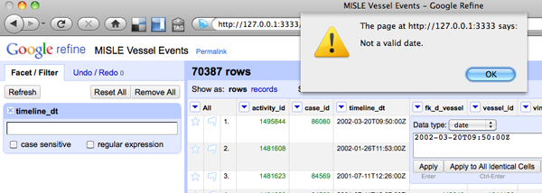
Yeah, I have no idea what I'm doing with date/time in refine...
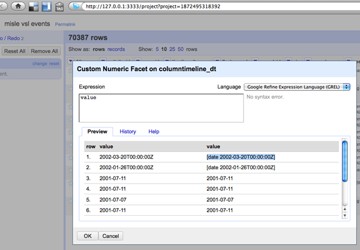
I think that refine will be a great data analysis tool in the future, but I don't really need it right at the moment for my critical project.
So I dropped refine for now and went for Fusion Tables. I was able to import the data in via the CSV upload option:
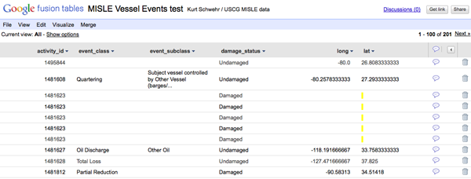
I could then make a map!
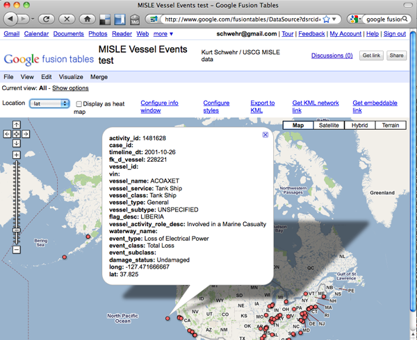
This is great, but only being able to use the set of Google provided icons is not going to work. I want "Oil Spill" to have this icon:
Turns out that lots of other people want the same ability: Allow custom marker image with public image url. This is a show stopper for visualizing the MISLE data. The icons make the dataset.
For my other data set, I need to figure out how to change the contents of the table from remote python code every few minutes and to be able to draw polygons.
01.26.2011 15:39
Audio podcast - Fran Ulmer on Deepwater Horizon
The University of Alaska Chancellor's
office just sent me this link to where they have already posted the
audio of Fran Ulmer's talk:
Addressing Alaskans: Oil Spill Commission Report and the Implications for Future Offshore Oil Development
audio (30MB mp3)
Addressing Alaskans: Oil Spill Commission Report and the Implications for Future Offshore Oil Development
audio (30MB mp3)
01.25.2011 09:41
Another Deepwater Horizon talk
Chris Reddy will be
giving another
talk on the Deepwater Horizon spill [Hydro International]
Christopher Reddy, senior scientist at the Woods Hole Oceanographic Institution's Department of Marine Chemistry and Geochemistry, is to present "Hunting for Subsurface Oil Plumes in the Gulf of Mexico Following the Deepwater Horizon Disaster" at 4PM on Friday, 28th January in Science, Mathematics and Technology Education building 150 on the Western Washington University campus in Bellingham, WA.Chris has a Wikipedia Page, yet none of us at CCOM have one. I created on for Peter Smith (Scientist) who was PI for Phoenix. My Wikipedia contributions. The joy of not being able to create your own Wikipedia page.
01.24.2011 11:12
Anchorage, AK - photos
I spent last week in Anchorage, AK.
Even in January, it is quite a spectacular city. I had a great time
taking pictures from the hotel and around town. First, the city and
surrounding area:
The Anchorage harbor is the major gateway of goods into and out of Alaska. You might expect no large ship traffic, but we saw this ship heading out from the 15th floor of the Captain Cook hotel.
Here is the actual port:
Sunrise was around 10AM and sunset was at 4:30PM, so we saw a lot of night.
Most of the day time had spectacular light when it was not snowing (about half the time)
A Sun Dog...
And I can't leave out the moon, which you can just see to left of the end of the mountains.
The real reason I was in Anchorage was the Alaska Marine Science Symposium workshop (AMSS) on Lessons Learned from the Deepwater Horizon (DWH) spill in the Gulf of Mexico. Fran Ulmer gave the plenary talk on Wednesday morning:
There were over 900 people at the conference, most of whom attended her talk. The workshop was as evening session that I would estimate had 300 people attend. Phil McGillivary hosted the session and gave two of the talks for people who were unable to attend. Thanks to Phil and John Farrell for inviting me.
Michelle Wood giving a talk about flourometers.
John Hildebrand talking about how he acoustically tracked whales during the incident and that the whales appeared to have stayed around despite the oil in the water column and all the noise of the response effort.
I tried to pack in some touristy stuff while there. There were some fantastic ice sculptures in the park!
The Alaska Science Museum has a heated sidewalk. It's very strange to a perfectly dry sidewalk when the rest of the city has snow everywhere.
They also had a thermal camera... hi from the world of hot and cold:
Several people were guests for Shannyn Moore's Moore Up North Tonight at Taproot with the topics being how the whales in Alaska are doing and the oil spill in the Gulf of Mexico and how it relates to Alaska.
In the Captain Cook Hotel had lots of art work about the captain. This one is great... especially if you look in the lower left where the chart is titled "A Chart".
I was able to keep up with things back in New England while Monica kept at her PhD comprehensive exam with the help of Rascal.
Thanks to all who attended the conference for making it an excellent and productive experience!
The Anchorage harbor is the major gateway of goods into and out of Alaska. You might expect no large ship traffic, but we saw this ship heading out from the 15th floor of the Captain Cook hotel.
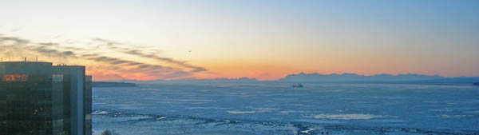
Here is the actual port:
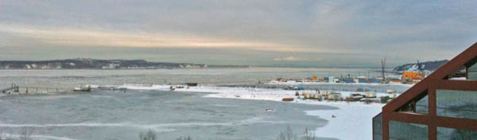
Sunrise was around 10AM and sunset was at 4:30PM, so we saw a lot of night.
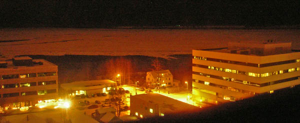
Most of the day time had spectacular light when it was not snowing (about half the time)
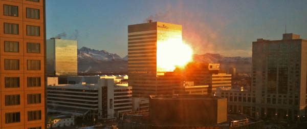
A Sun Dog...
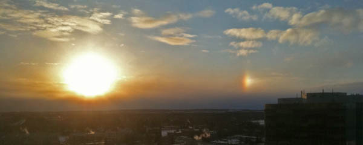
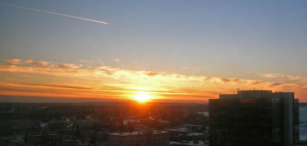
And I can't leave out the moon, which you can just see to left of the end of the mountains.
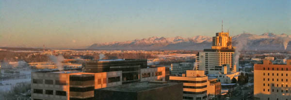
The real reason I was in Anchorage was the Alaska Marine Science Symposium workshop (AMSS) on Lessons Learned from the Deepwater Horizon (DWH) spill in the Gulf of Mexico. Fran Ulmer gave the plenary talk on Wednesday morning:
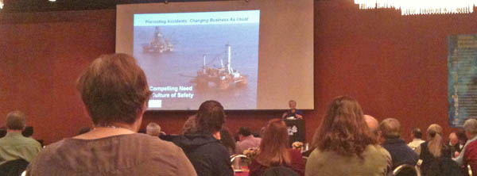
There were over 900 people at the conference, most of whom attended her talk. The workshop was as evening session that I would estimate had 300 people attend. Phil McGillivary hosted the session and gave two of the talks for people who were unable to attend. Thanks to Phil and John Farrell for inviting me.
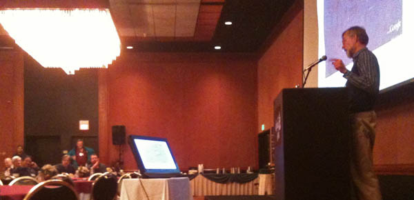
Michelle Wood giving a talk about flourometers.
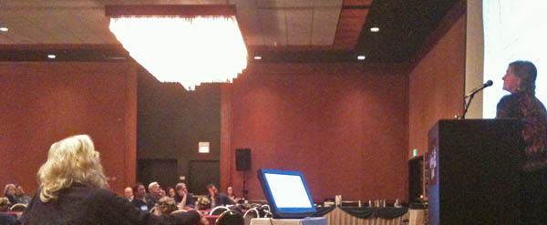
John Hildebrand talking about how he acoustically tracked whales during the incident and that the whales appeared to have stayed around despite the oil in the water column and all the noise of the response effort.
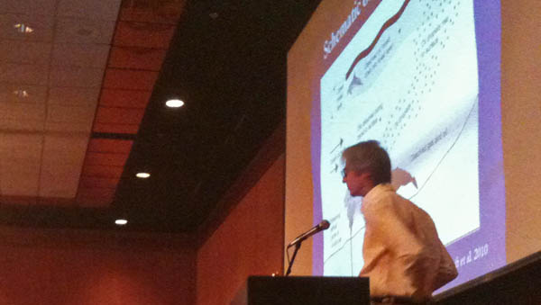
I tried to pack in some touristy stuff while there. There were some fantastic ice sculptures in the park!
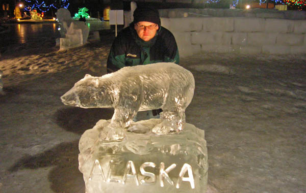
The Alaska Science Museum has a heated sidewalk. It's very strange to a perfectly dry sidewalk when the rest of the city has snow everywhere.
They also had a thermal camera... hi from the world of hot and cold:
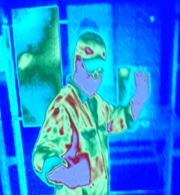
Several people were guests for Shannyn Moore's Moore Up North Tonight at Taproot with the topics being how the whales in Alaska are doing and the oil spill in the Gulf of Mexico and how it relates to Alaska.
In the Captain Cook Hotel had lots of art work about the captain. This one is great... especially if you look in the lower left where the chart is titled "A Chart".
I was able to keep up with things back in New England while Monica kept at her PhD comprehensive exam with the help of Rascal.
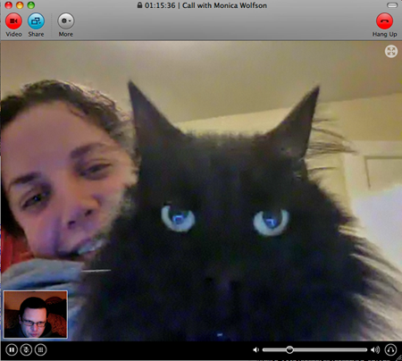
Thanks to all who attended the conference for making it an excellent and productive experience!
01.24.2011 09:53
NSF GeoData 2011 workshop
Who will be at this workshop in the
Denver/Boulder area?
Geo-Data Informatics: Exploring the Life Cycle, Citation and Integration of Geo-Data, NSF sponsored workshop - GeoData 2011
Geo-Data Informatics: Exploring the Life Cycle, Citation and Integration of Geo-Data, NSF sponsored workshop - GeoData 2011
The workshop will bring together the requisite scientists, information specialists, librarians, computer scientists and data managers who specialize and generalize in a broad variety of geo- discipline areas and applications, with the primary objective to: to substantially advance discussions and directions of data life cycle, data integration and data citation, with strong emphasis on end-use, and to provide a state-of-the-field report to NSF and the USGS of the geoinformatics community's capabilities and needs that could in turn ultimately benefit from an academic-multi-agency community-focused set of development activities. Additional deliverables would include: a) Readiness assessment and identification of gaps for both technology and education around geo-data informatics and their priorities, b) Grand challenge opportunities as well as immediate next steps, c) Identification of additional stakeholders and means to include their inputs. The time is right for a series of discussions across the various geoscience discipline communities. The proposed workshop is a forum for this discussion and is an important component of the conversation, which must occur immediately. It is very likely that a highly distributed implementation will be required and these will rely upon a number of focused and coordinated efforts.
01.23.2011 00:39
USCG MISLE Data Linkages
I've got my new version of the MISLE
incident database visualization working with a table view for each
incident.
However, I'm having trouble figuring out how to link to the vessel definitions and incident reports on the USCG web site. It seems that the Vessel ID doesn't map directly and the Activity ID search isn't something where I can construct a simple restful http link. The Vessel ID is contained in the Alternate VIN below. So very confusing.
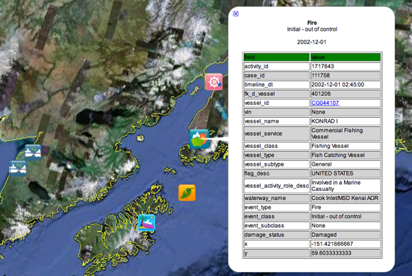
However, I'm having trouble figuring out how to link to the vessel definitions and incident reports on the USCG web site. It seems that the Vessel ID doesn't map directly and the Activity ID search isn't something where I can construct a simple restful http link. The Vessel ID is contained in the Alternate VIN below. So very confusing.
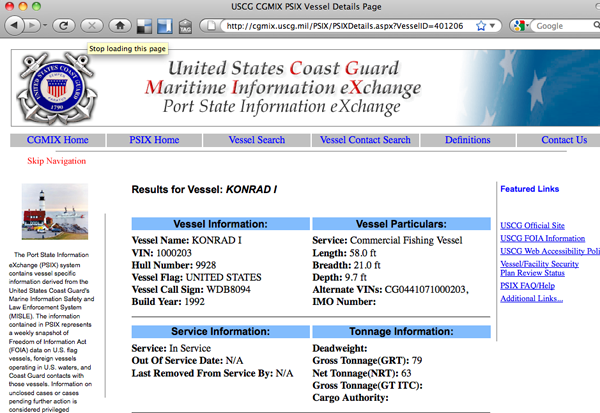
01.20.2011 15:47
Planetary OGC Interoperability Experiment
Eric from JPL forwarded me an email
from Trent Hare (thare at usgs.gov) where Trent talked about trying
to ramp up use of OGC interchange services for geospatially
referenced data. I contacted Trent and he let me know that people
are welcome to contact him if they want to participate or want more
information. Here is what he was talking about:
Speaking of interchange, I have been talking to two folks at AOOS who have been giving me tips on using Sensor Observation Service (SOS). I really want a world were it is easy to setup sensors and have the data get to all that need it without massive amounts of hassle. I need to get a chance to look at PySOS to see what it is like. We have lots of work to do before this kind of stuff is easy. Can SOS handle things like AIS? Can we have Nagios or OpenNMS scan an SOS server and guide you through setting up monitoring?
This Planetary Open Geospatial Consortium (OGC) Interoperability Experiment (IE) Day will consist of participants testing various web-mapping services available in the community. Participants which do not currently support an OGC WMS, WFS, WCS, or 'KML' map server are still welcome to participate. We could use assistance testing client applications like ENVI, ArcMap, Global Mapper, Google Earth, QGIS, OpenLayers, home-grown mapping apps, or even command-line utilities like GDAL. However, you would be expected to submit a short write-up (and screenshots) of successful and/or unsuccessful tests. If you do have an available planetary server, and are willing to participate, this day would allow others on the team to test (and abuse) your local servers. The end result of this I.E. test should be a list of recommendations to better interoperate across our different services and server types. If enough information is gathered, a "Best Practice" paper will be submitted to the OGC. If we are not ready, we will roll-up our sleeves and try another day of testing after resolving some of the issues. I will also plan to present a poster of the day's tribulations at LPSC this year.So much of my time on prior planetary missions has been lost to trying to survive the data interchange problem. Anything people can to do improve the situation is very exciting.
Speaking of interchange, I have been talking to two folks at AOOS who have been giving me tips on using Sensor Observation Service (SOS). I really want a world were it is easy to setup sensors and have the data get to all that need it without massive amounts of hassle. I need to get a chance to look at PySOS to see what it is like. We have lots of work to do before this kind of stuff is easy. Can SOS handle things like AIS? Can we have Nagios or OpenNMS scan an SOS server and guide you through setting up monitoring?
01.20.2011 07:47
Alaska Marine Science - Lessons Learned from DWH
I have all but three of the
presentation power points online at this point. I hope to have
Debbie and John's soon. For Fran, I'll just link to the commission
report.
http://tinyurl.com/BpLessons
Power point presentations:
http://tinyurl.com/BpLessons
Power point presentations:
- Introduction: Philip McGillivary, USCG
- DWH Commission Overview: Fran Ulmer, UA
- Logistics Overview, ERMA: Kurt Schwehr, UNH CCOM/JHC
- 3D Oil Movement models: Debbie Payton, NOAA ORR
- Seabird studies: Chris Haney, US FWS
- Chemical detection: Michelle Wood, NOAA AOML OCD
- Benthic Studies: Sandra Brooke, Mar. Cons. Biol. Inst.
- Marine mammal studies: John Hildebrand, Scripps
- Microbial studies: Samantha Joye, UGA
- Aircraft and Autonomous Aircraft: Surface Oil Detection Methods: Philip McGillivary
- Oil Spill Detection and Tracking Technologies: Philip McGillivary
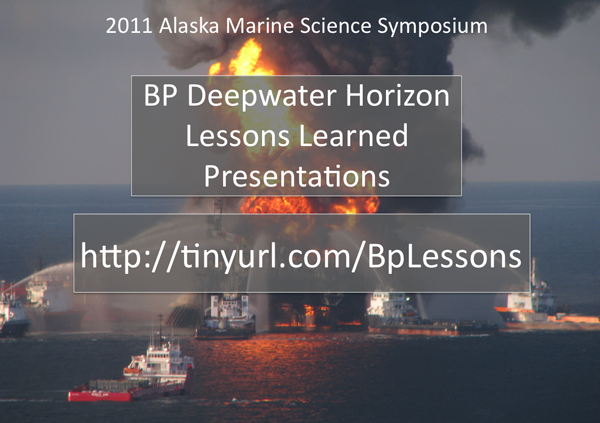
01.19.2011 14:16
Deepwater Horizon Lessons learned this evening
If you are in Anchorage, AK this
evening, come by the Captain Cook Hotel and join us for Lessons
Learned from the Gulf of Mexico oil spill from 5:45-8:00PM at the
Alaska Marine Science
Symposium.
My talk: 2011-schwehr-amss-dwh-lessons.pptx
Here are some lessons learned in my oppinion to try to help get the discussion going:
Comment here
My talk: 2011-schwehr-amss-dwh-lessons.pptx
Here are some lessons learned in my oppinion to try to help get the discussion going:
- Ships of all sizes should have AIS and there must be a way to track which ships are a part of a response
- Have portable AIS systems ready to put on ships (suitcase version)
- Know the bathymetry and be willing to collect your own if necessary. Have charts, the Coast Pilot and local names
- Have a manual that you get to all of the team. People coming to the area don't know the local names, physical layout, and available data / resources
- Start using mobile devices to collect data, position and information. Avoid handwritten and voice communication to prevent confusion
- Train with actual ships being virtually moved around
- Get necessary data integrated into AOOS, ERMA and other systems before you are in a crisis. Unlike Deepwater Horizon, initial response time is usually critical
- Train people to work with the data types before a crisis
- PDFs and paper are not good primary delivery devices
- Communication across all the teams makes or breaks the response
- We should have AIS from a couple response vessels forwarded through satellite to supplement normal stations
Comment here
01.18.2011 14:43
Alaska Ocean Observing System (AOOS) FLEX based app
I am at an AOOS presentation this afternoon:
data.aoos.org and for example: http://data.aoos.org/maps/coverage.php.
This is a FLEX based application talking to a blade server running an instance of GeoServer.
The previous two images were model data, but here is point sensor data:
data.aoos.org and for example: http://data.aoos.org/maps/coverage.php.
This is a FLEX based application talking to a blade server running an instance of GeoServer.
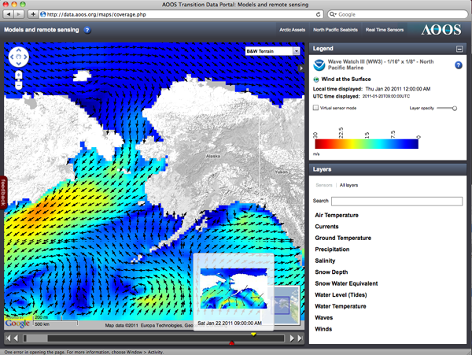
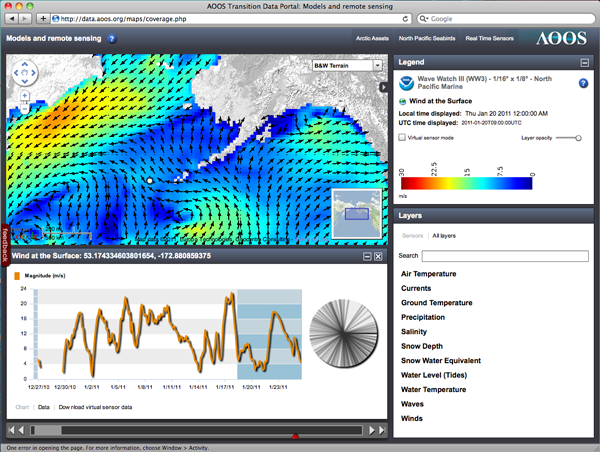
The previous two images were model data, but here is point sensor data:
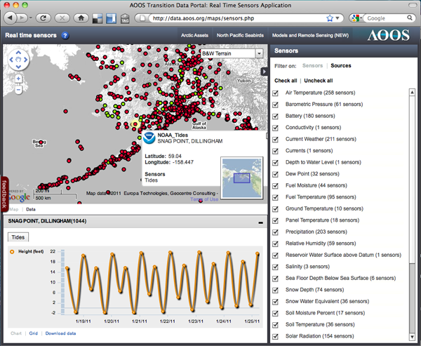
01.18.2011 10:02
Transview32 (TV32) displaying right whale notices from AIS
Video by Mike Thompson...
01.18.2011 04:34
unix file command version 5.05 - geospatial formats
Last February, I submitted a bunch of
marine science file type definitions ("magic") to the Fine Free File Command, which
is the file command for Linux and Mac systems. Yesterday, Christos
Zoulas released file-5.05, that has some of these proposed
definitions in the package. They live at magic/Magdir/geo.
This would be my first reasonably sized patch to make it into a widely used open source package. My grep patch was too small to count for anything and fink is a very specific mac too so also does not count.
Here are the formats I was able to include so far:
BTW, I have yet to try it as there is a change in the shared library handling of file that breaks the fink setup.
This would be my first reasonably sized patch to make it into a widely used open source package. My grep patch was too small to count for anything and fink is a very specific mac too so also does not count.
Here are the formats I was able to include so far:
- RDI Acoustic Doppler Current Profiler (ADCP)
- FGDC ASCII metadata
- Knudsen seismic KEL binary (KEB)
- LADS Caris Ascii Format (CAF) bathymetric lidar (HCA)
- LADS Caris Binary Format (CBF) bathymetric lidar waveform data (HCB)
- GeoSwath RDF
- SeaBeam 2100 multibeam sonars
- XSE multibeam
- SAIC generic sensor format (GSF) sonar data
- MGD77 Header, Marine Geophysical Data Exchange Format
- mbsystem info cache
- Caris multibeam sonar related data (HDCS)
- Caris ASCII project summary
- IVS Fledermaus TDR file
- ECMA-363, Universal 3D (U3D)
- elog journal entry
BTW, I have yet to try it as there is a change in the shared library handling of file that breaks the fink setup.
01.13.2011 16:27
Midwater multibeam early prototype
Back in 2006, CCOM started working on
visualizing midwater column multibeam data using a dataset from the
UNH fish cages. I just saw that last month Hydro International
featured a video I posted in 2009 of the Fledermaus Midwater
visualization system that came out of the work at CCOM: Fish
Cages in Fledermaus. I figured it was time to go find some of
the images I made 4 years ago when we were brainstorming how to
attack this data. It is very important to try a wide range of ideas
when working on a new concept. The final results look nothing like
our first tries.
I made these using Coin3D:
I made these using Coin3D:
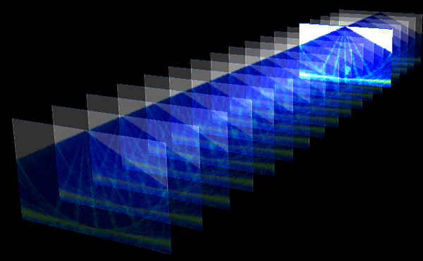
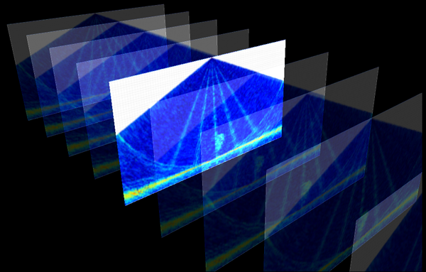
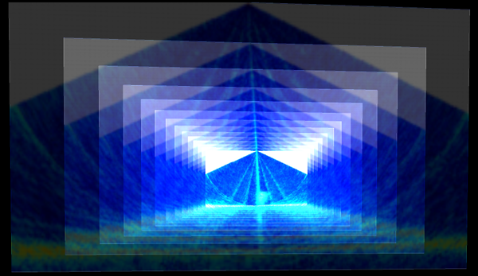
01.13.2011 13:02
Simulations of oil spills and follow along with missions
I been thinking about simulation
environments and following actual events in virtual environments
since the late 1980's and especially after visiting Scott Fischer's
Virtual Reality lab at NASA Ames in 1990. Those were days of big
visions, but light on really usable systems. Since then, I've used
tools like SecondLife, Viz, GeoZui, Fledermaus, FlightGear (Roland simulating
ships in SF Bay), and many other similar platforms. They have all
been really great, but each is missing some aspect of what I'm
looking for. It needs to be easy to control the environment from
inside or from external programs. It has to handle arbitrary
objects and control styles (sorry Fledermaus). And for me to count
on it for the long term, it has to be Open Source. It also must
have a community of developers so that the burden can be
distributed. I have the source for GeoZui and Viz, but they aren't
really open and the teams are too small... even if the software is
fast and really powerful. The idea of using a SecondLife type
environment to mirror the world has been enticing, but SecondLife
really turned me off during the two weeks that I gave it a try. I
don't want the commercially controlled public craziness that is
SecondLife.
I was listening to FLOSS Weekly 123: Open Wonderland and thought that Open Wonderland might be the ticket. It looks like there are 4 people making lots of changes to the code. I gave it a spin on my old Mac laptop to see if I could get it running and it came right up (took about 90 seconds).
So... I now have two tasks to make this useful. First, I need to be able to load in the shoreline of the North America. Second, how to I talk to the server from a non-Java client? I've got python code that can decode ship positions. Looking at the open ports, it's a little overwhelming with 33 open:
It looks like when Oracle bought Sun, they killed Project Darkstar, but it lives on as RedDwarf Server. And there is PyRedDwarf, so it may be possible to use python to talk to Open Wonderland.
If that all works, we then need software to simulate an oil spill and provide simple simulators for driving ships around virtually by humans and agents. Perhaps we can mix in real ship motions from a couple real ships engaged in the drill. One of the big things with the SONS drill I saw was a lack of reality to the drill. When I asked a USCG person which ships were moving around for the drill, they had no idea. The logistics of moving ships, plans, people and supplies around is a huge part of dealing with a spill. If we don't simulate that aspect, then we are going to have trouble when it comes to the real thing. Another trouble spot with OpenWonderland is that we will have a harder time simulating the realworld communications difficulties.
See also: OpenSimulator that is compatible with SecondLife.
I was listening to FLOSS Weekly 123: Open Wonderland and thought that Open Wonderland might be the ticket. It looks like there are 4 people making lots of changes to the code. I gave it a spin on my old Mac laptop to see if I could get it running and it came right up (took about 90 seconds).
wget http://download.openwonderland.org/releases/preview4/Wonderland.jar java -jar Wonderland.jar open http://192.168.0.6:8080I pressed Launch to use Java Web Start to get the interface running and Server Admin to view how the server was configured.
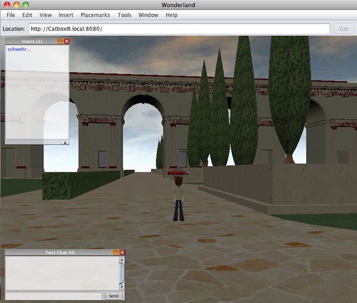
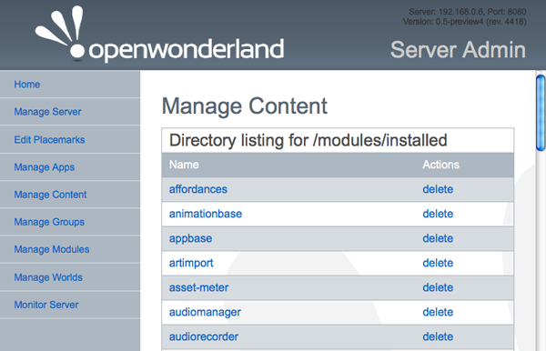
So... I now have two tasks to make this useful. First, I need to be able to load in the shoreline of the North America. Second, how to I talk to the server from a non-Java client? I've got python code that can decode ship positions. Looking at the open ports, it's a little overwhelming with 33 open:
lsof -i -nP | grep java java 81564 schwehr 61u IPv6 0x12e38350 0t0 TCP *:8080 (LISTEN) java 81564 schwehr 63u IPv6 0x0954de20 0t0 TCP [::1]:62326->[::1]:62325 (TIME_WAIT) java 81564 schwehr 74u IPv6 0x09b14940 0t0 TCP [::192.168.0.6]:62439->[::192.168.0.6]:1139 (ESTABLISHED) java 81564 schwehr 114u IPv6 0x09b70bb0 0t0 TCP [::192.168.0.6]:62428->[::192.168.0.6]:1139 (ESTABLISHED) java 81564 schwehr 130u IPv6 0x09c325c0 0t0 TCP [::192.168.0.6]:62447->[::192.168.0.6]:1139 (ESTABLISHED) java 81564 schwehr 138u IPv6 0x094f9aa0 0t0 TCP [::192.168.0.6]:62448->[::192.168.0.6]:1139 (ESTABLISHED) java 81580 schwehr 51u IPv6 0x0947c940 0t0 TCP [::192.168.0.6]:5060 (LISTEN) java 81580 schwehr 52u IPv6 0x094f90e0 0t0 TCP [::1]:62392->[::1]:62391 (TIME_WAIT) java 81580 schwehr 53u IPv6 0x0bd37f78 0t0 UDP [::192.168.0.6]:5060 java 81580 schwehr 54u IPv6 0x085aa130 0t0 UDP *:3478 ... java 81583 schwehr 86u IPv6 0x094f9830 0t0 TCP *:43012 (LISTEN) java 81583 schwehr 92u IPv6 0x094f95c0 0t0 TCP *:62393 (LISTEN) java 81583 schwehr 93u IPv6 0x094f9d10 0t0 TCP *:44533 (LISTEN) java 81583 schwehr 94u IPv6 0x09b13350 0t0 TCP [::127.0.0.1]:6668->[::127.0.0.1]:63264 (CLOSED) java 81583 schwehr 100u IPv6 0x09b141f0 0t0 TCP *:44535 (LISTEN) java 81583 schwehr 101u IPv6 0x09b6fd10 0t0 TCP [::192.168.0.6]:1139->[::192.168.0.6]:62439 (ESTABLISHED)Their developer page has some info on the architecture:
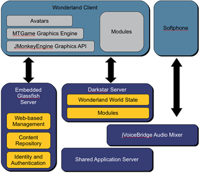
It looks like when Oracle bought Sun, they killed Project Darkstar, but it lives on as RedDwarf Server. And there is PyRedDwarf, so it may be possible to use python to talk to Open Wonderland.
If that all works, we then need software to simulate an oil spill and provide simple simulators for driving ships around virtually by humans and agents. Perhaps we can mix in real ship motions from a couple real ships engaged in the drill. One of the big things with the SONS drill I saw was a lack of reality to the drill. When I asked a USCG person which ships were moving around for the drill, they had no idea. The logistics of moving ships, plans, people and supplies around is a huge part of dealing with a spill. If we don't simulate that aspect, then we are going to have trouble when it comes to the real thing. Another trouble spot with OpenWonderland is that we will have a harder time simulating the realworld communications difficulties.
See also: OpenSimulator that is compatible with SecondLife.
01.12.2011 15:28
USCG MISLE public database in Google Earth
I have finally put Colleen's ship
incident icon set to use with the July 2010 public snapshot of the
MISLE Incident set. MISLE is the USCG Marine Information for
Safety and Law Enforcement.
I pulled the data from here:
http://marinecasualty.com/data/MCDATADISC2.zip
The USCG HomePort website gives URLs that only work in your session. I can only forward the directions for getting the data that I got from the USCG:
This time around, I built a better parser and have put more features into the KML. I've parse 69049 event entries with non-zero coordinates. While it is not finished, I've got each "event_type" in its own KML folder and each event is tagged with a time. I'll release an SQLite 3 database and the KML when I get more done, but this is enough to ge me what I need for the conference next week.
My 3+ year old laptop does have trouble with this many placemarks in Google Earth. There are a few tricks I can use to speed it up when I get a chance.
Trackback: Google Geonews: 800M Google Earth Activations, Hotpot in Google Maps and iOS, Goggles Solves Sudoku, and more (slashgeo)
I pulled the data from here:
http://marinecasualty.com/data/MCDATADISC2.zip
The USCG HomePort website gives URLs that only work in your session. I can only forward the directions for getting the data that I got from the USCG:
Go to the Homeport site: http://homeport.uscg.mil/ Once there click on the following links on the left frame of the page. 1. Investigations 2. Marine Casualty/Pollution Investigations 3. Marine Casualty and Pollution Data for ResearchersIt's a bummer that this dataset is not versioned. I can't tell if the data that I used in 2006 for my first version of this has been updated or not. I still see lots of incidents without location coordinates, at (0,0), or at impossible locations (e.g. not in US Waters - in the middle of the Greenland ice sheet).
This time around, I built a better parser and have put more features into the KML. I've parse 69049 event entries with non-zero coordinates. While it is not finished, I've got each "event_type" in its own KML folder and each event is tagged with a time. I'll release an SQLite 3 database and the KML when I get more done, but this is enough to ge me what I need for the conference next week.
My 3+ year old laptop does have trouble with this many placemarks in Google Earth. There are a few tricks I can use to speed it up when I get a chance.
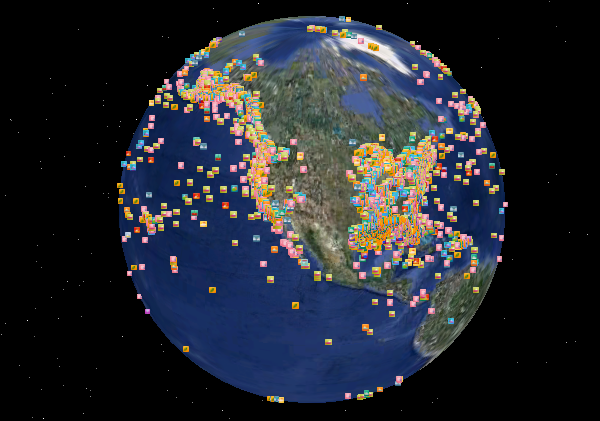
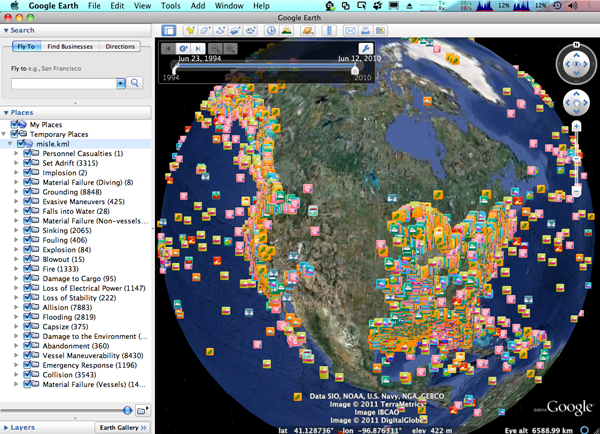
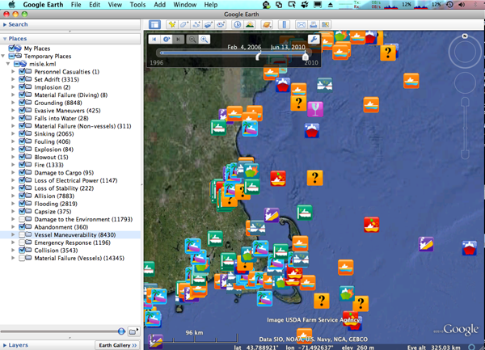
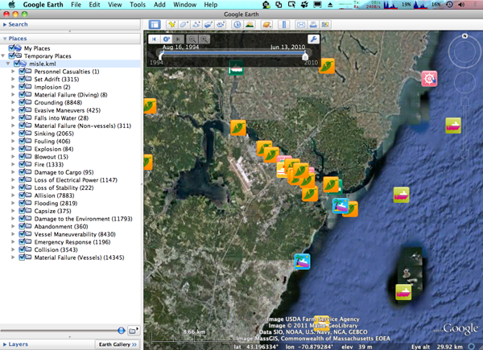
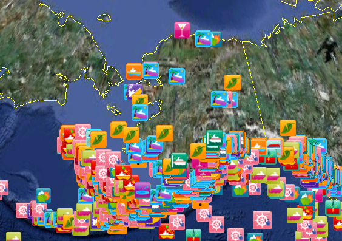
Trackback: Google Geonews: 800M Google Earth Activations, Hotpot in Google Maps and iOS, Goggles Solves Sudoku, and more (slashgeo)
01.11.2011 17:48
Deepwater Horizon - National Commission final report
National Commission releases final
report on Deepwater Horizon Oil Spill [gCaptain]
The entire report: DEEPWATER_ReporttothePresident_FINAL.pdf
Some parts of the report that are relevant to next week in Alaska:
The entire report: DEEPWATER_ReporttothePresident_FINAL.pdf
Some parts of the report that are relevant to next week in Alaska:
KEY COMMISSION FINDINGS
...
6. Both industry and government were unprepared to respond to a
massive deepwater oil spill, even though such a spill was
foreseeable.
* Companies did not possess the response capabilities they claimed.
* Since the Exxon Valdez oil spill in 1989, neither industry nor
the government has made significant investments in
spill-response research and development, so the clean-up
technology used following the Deepwater Horizon spill was
largely unchanged.
7. The environmental damage of the spill to the Gulf will take decades
to fully assess. The government estimates that more than 170 million
gallons of oil went into the Gulf, with some portion remaining in the
ocean and possibly settling to the sea floor. The Macondo disaster
placed further stress on coastal resources already degraded over many
decades by a variety of economic and development activities, including
energy production.
...
10. The Arctic is an important area for future oil and gas
development, based on projections of significant resources and
industry interest. In order to assure good decisions are made
regarding where, when, and how to develop those resources safely and
reduce risk in frontier areas, additional comprehensive scientific,
technical, and oil spill response research is needed.
...
and
KEY COMMISSION RECOMMENDATIONS ... 6. Scientific and technical research in all areas related to offshore drilling needs to be accelerated. Better scientific and technical information is essential to making informed decisions about risk before exploration or drilling commence. ... 12. Spill response planning by both government and industry must improve. Industry spill response plans must provide realistic assessments of response capability, including well containment. Government review of those plans must be rigorous and involve all federal agencies with responsibilities for oil spill response. The federal government must do a better job of integrating state and local officials into spill planning and training exercises. Industry needs to develop, and government needs to incentivize, the next generation of more effective response technologies. ... 15. Greater attention should be given to new tools, like coastal and marine spatial planning and ocean observation systems, to improve environmental protection, management of OCS activities, and ecosystem restoration efforts in marine environments.No mentions of: multibeam sonar, AIS, GIS, ERMA, Geoplatform, CCOM, UNH, MISLE, and a number of other key aspects (at least from my point of view).
01.10.2011 15:53
Setting up yasnippets
I've got the basics of yasnippets
going and Ben Smith gave me a quick tutorial of his tweaks to his
.emacs and org-mode snippets. I couldn't get Ben's tweak to use '='
to be the completion character to avoid clashing with TAB in
org-mode, but luckily, the yasnippet
FAQ has an entry that got me setup. Here is what I've added to
my .emacs:
I have a day based logging style in my org-mode journal file (one file per year). These seemed like a great place to start my snippet building. I want an entry that looks like this:
Benny on #org-mode suggested looking at org-datetree. I found Capture mode and Date Trees in org-mode by Charles Cave, who has created orgnode for handling org-mode files from python.
;;; YASnippet
(add-to-list 'load-path
"~/.emacs.d/plugins/yasnippet-0.6.1c")
(require 'yasnippet) ;; not yasnippet-bundle, which did not work for meb
(yas/initialize)
(yas/load-directory "~/.emacs.d/plugins/yasnippet-0.6.1c/snippets")
(yas/load-directory "~/projects/src/elisp/snippets")
(add-hook 'org-mode-hook
(let ((original-command (lookup-key org-mode-map [tab])))
`(lambda ()
(setq yas/fallback-behavior
'(apply ,original-command))
(local-set-key [tab] 'yas/expand))))
I created a place for yasnippets:
cd mkdir -p .emacs.d/plugins cd .emacs.d/plugins wget http://yasnippet.googlecode.com/files/yasnippet-0.6.1c.tar.bz2 tar xf yasnippet-0.6.1c.tar.bz2Then I put Ben's example org-mode snippets into my own svn area.
mkdir ~/projects/src/elisp/snippets/org-modeHere is the demo snippet that Ben showed me. It's about the perfect level for me to start at.
#- yasnippet
# key: begin
# name: begin
# --
#+BEGIN_${1:SRC} $2
$0
#+END_$1
The snippet is triggered by typing "begin" in org-mode and hitting
TAB. The "${1:SRC}" is the first area that will get filled in and
I've changed his EXAMPLE to SRC. I can backspace and edit the SRC
to be VERSE or EXAMPLE if I want. Pressing TAB again will take me
to $2 where I can type in the language. When I'm done, I hit TAB
again and yasnippet will leave me at $0 ready to paste in the
source code.I have a day based logging style in my org-mode journal file (one file per year). These seemed like a great place to start my snippet building. I want an entry that looks like this:
* Jan 10, CCOM, Durham, NH <2011-01-10 Mon> :day:It took some help from the folks on the #org-mode channel on IRC, but I now have this snippet:
#- yasnippet # key: day # name: day # contributor: Kurt Schwehr # -- * `(format-time-string "%b %d" (current-time))`, $1 `(org-insert-time-stamp nil nil nil nil nil nil)` :day:I type "day[TAB]" and then type my location followed by [TAB] and then [TAB] again and I have a day heading.
Benny on #org-mode suggested looking at org-datetree. I found Capture mode and Date Trees in org-mode by Charles Cave, who has created orgnode for handling org-mode files from python.
01.09.2011 17:40
Modifying the Mac keyboard for emacs
Emacs uses the Meta and Ctrl keys all
the time. I've been staring at my capslock key and wondering what
bonehead used up that much space for such a useless key. I just saw
Xah Lee mention Creating Keyboard
Layout in Mac OS X. That seems a little over the top, but it is
possible to do a simple tweak using System Preferences ->
Keyboard -> Modifier Keys. You can pick the CapsLock key to be
Meta or Ctrl. I'm going with Ctrl for now... can I make myself use
it?
Remap Caps Log in X / KDE / Windows and more.
I've also just started playing with yasnippet for emacs... inserting templates.
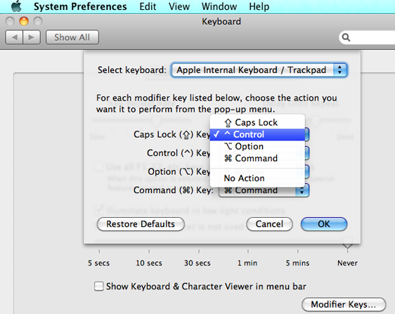
Remap Caps Log in X / KDE / Windows and more.
I've also just started playing with yasnippet for emacs... inserting templates.
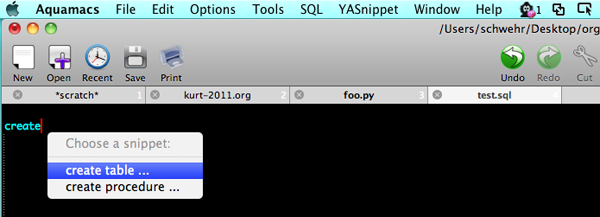
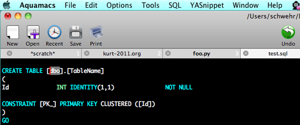
01.09.2011 00:23
NOAA Nav Manager about the Arctic
Page 18 of
Sidelights_December2010.pdf has an article by CDR Michael
Henderson, NOAA Navigation Manager: Arctic Navigation. The last
section:
This is my first exposure to Sidelights. Too bad Sidelights and Digital Ship don't have RSS feeds.
... NOAA surveys high transit areas Responding to a request from the U.S. Navy, U.S. Coast Guard, Alaska Maritime Pilots, and the commercial shipping industry, NOAA sent one of its premier surveying vessels, NOAA Ship Fairweather, to detect navigational dangers in critical Arctic waters that have not been charted for more than 50 years. Fairweather, whose homeport is Ketchikan, Alaska, spent July and August examining seafloor features, measuring ocean depths and supplying data for updating NOAA's nautical charts spanning 350 square nautical miles in the Bering Straits around Cape Prince of Wales. The data will also support scientific research on essential fish habitat and will establish new tidal datums in the region.Found via: Piloting Arctic Waters And Other Major Shifts In Navigation [gCaptian] And there is an article by John Konrad on page 29: A factor critical to ship management... other departments.
This is my first exposure to Sidelights. Too bad Sidelights and Digital Ship don't have RSS feeds.
01.08.2011 23:55
UNH downtime Sunday Jan 8
Sunday from 6AM to Noon is UNH
scheduled downtime. I tried to put in a helpdesk ticket to UNH
about the downtime, but they never bothered to get back to me and
there is no way to track a ticket on the web.
NAIS services to ERMA and GeoPlatform will be down during this time. Hopefully they will use less than the allocated 6 hours for the network maintenance.
Update 2011-Jan-9 8:26AM: Suggestion to the UNH IT team... use an outside blog to update the status when you are doing network maintenance. I'm able to log into CCOM and view the UNH web page, but their web page, it.unh.edu, is down or was down. Remedy is partly there. I'm updating this blog via a CCOM computer and I've checked on the two different locations that host ERMA machines. They are fine. Who knows what the IT folks are up to? It takes just a momemt to update a blog via a smartphone by email with blogger.
Update 2011-Jan-10: Turns out the helpdesk responses got eaten up by my UNH Exchange Account. Exchange doesn't do forwarding and to create rules, you have to run outlook, so I have a hard time following what goes to that email account. Had a great talk with the IT team today. The downtime on Sunday was pretty small and the upgrade is definitely a reliability improvement.
NAIS services to ERMA and GeoPlatform will be down during this time. Hopefully they will use less than the allocated 6 hours for the network maintenance.
Update 2011-Jan-9 8:26AM: Suggestion to the UNH IT team... use an outside blog to update the status when you are doing network maintenance. I'm able to log into CCOM and view the UNH web page, but their web page, it.unh.edu, is down or was down. Remedy is partly there. I'm updating this blog via a CCOM computer and I've checked on the two different locations that host ERMA machines. They are fine. Who knows what the IT folks are up to? It takes just a momemt to update a blog via a smartphone by email with blogger.
Update 2011-Jan-10: Turns out the helpdesk responses got eaten up by my UNH Exchange Account. Exchange doesn't do forwarding and to create rules, you have to run outlook, so I have a hard time following what goes to that email account. Had a great talk with the IT team today. The downtime on Sunday was pretty small and the upgrade is definitely a reliability improvement.
01.08.2011 08:22
Can ODB-II / CAN-Bus iPhone setup
I definitely want the Griffin CarTrip
OBD-II Hardware Interface and the iphone app. Seems about
middle of the road price wise and the iphone app is supposed to be
free. It uses the On-board
diagnostics (ODB-II / CAN-bus)
to listen to the car.
01.07.2011 17:25
NAIS view of the Gulf of Mexico
Kyle Ward just sent me this image
(which I've modified for posting here) of NAIS data from the
western Gulf of Mexico. Barry modified my noaadata AIS code to send
AIS to Oracle rather than PostGIS. From there, they used FME to
pull records from the database and MapInfo to make a 1KM cell sized
visualization. This is the way that technology transfer is supposed
to go. Beyond a few questions about my code in the conversion to
Oracle input, they have not needed any help.
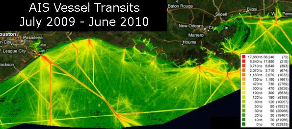
01.05.2011 11:51
org-mode wishes
I was giving a demo of org-mode
yesterday to a beginner emacs user. While org-mode impressed this
person, the first question about agenda was "Will it sync with my
Google Calendar". Great question. If org at least pushed events to
Google Calendar and pulled calendar events into the agenda view, I
think a lot more people would use the agenda features of org. I
haven't tried using org agenda myself after the first week or two
of adopting org a year ago. There is a 2007
thread on the topic.
Emacs and Google Calendars [Clementson's Blog] looks like a good starting point. However, it's not that clear what the status of g-client it. It has updates from the author are recently as 2 months ago, but it is not integrated into emacs and it is a sub-part of emacsspeak. I'm not sure Stallman would be too thrilled about Google cloud services being integrated into emacs.
A second thing came up. If you are using org when traveling, being able to record the timezone in a timestamp is essential. When you are on a ship at sea, knowing the reference for your time is not an optional feature. Or at least the ability to timestamp exclusively in UTC. However, here is Carsten on the subject in 2008:Also,
timestamps do not show in export. I need to figure out if I can set
them to show up.
Update 2011-Jan-09: Hmmm. With the latest org-mode (trunk post 7.4), timestamps are showing up.
Emacs and Google Calendars [Clementson's Blog] looks like a good starting point. However, it's not that clear what the status of g-client it. It has updates from the author are recently as 2 months ago, but it is not integrated into emacs and it is a sub-part of emacsspeak. I'm not sure Stallman would be too thrilled about Google cloud services being integrated into emacs.
A second thing came up. If you are using org when traveling, being able to record the timezone in a timestamp is essential. When you are on a ship at sea, knowing the reference for your time is not an optional feature. Or at least the ability to timestamp exclusively in UTC. However, here is Carsten on the subject in 2008:
Would it be practical to extend the time format to include TZ data
(ie: -06:00 ?).
No, I don't want to go there. It is pandoras box.
Only in the neer-going-to-happen rewrite of Org-mode.
Otherwise I'll pick a TZ as standard and just mentally
convert from there.
Yes, I think this is the only viable option.
Looking through the code, there is only a little bit of timezone
awareness in org2rem.el and org-icalendar.el. Bummer. Update 2011-Jan-09: Hmmm. With the latest org-mode (trunk post 7.4), timestamps are showing up.
01.04.2011 17:28
JabRef HTML export mode rocks!
Thanks to Monica's
post on JabRef's HTML table, I now have a new publications web
page. I still need to try out more of Mark's export modes as the
current one isn't the coolest. I like
this one better. This also points out that I need to improve
my
BibTex file.
My Papers - HTML JabRef Export
My Papers - HTML JabRef Export
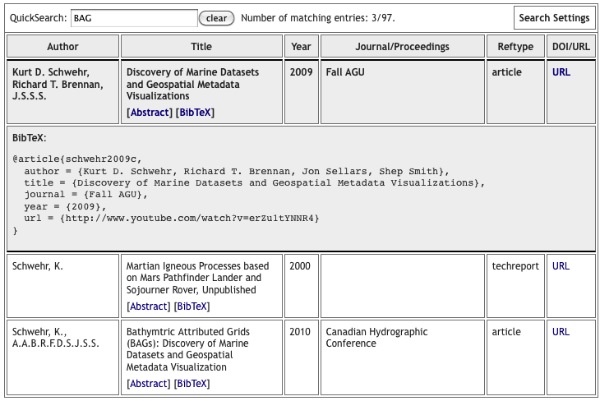
01.04.2011 16:09
ERMA outage this Sunday
I just found out that UNH IT has a 6
hour network outage scheduled for campus this Sunday. This will
take out ERMA and the AIS updates in GeoPlatform during that time.
Seems like they should be able to have an alternate route for that
time for at least high priority systems.
UNH IT - Scheduled Maintanece
UNH IT - Scheduled Maintanece
Initially published on Wednesday, December 15, 2010 Wednesday, December 15, 2010 at 08:32AM UNH IT will perform upgrade maintenance on Sunday, January 9 from 6 AM to 12 PM on the Wide Area Network (WAN), the ECG router, and the ECG firewall. During this time, all UNH Internet services will be unavailable, as well as access to Enterprise System Applications. If you have any questions please call the UNH IT Help Desk & Dispatch Center at 603-862-4242.At least the rest of the ERMA team already knew about this and I am now subscribed to the RSS feed for these.
01.03.2011 17:57
Emacs org-export hello world
I'm trying to write a KML exporter
for org-mode, but before I can do
that, I need to get even a simple exporter working. I couldn't find
anything simple, so I decimated the
mediawiki demo of using
org-export under EXPERIMENTAL
to try to make it as small as possible. Both of these are by
Bastien Guerry. I'm
totally new to emacs lisp, so don't expect my code to be any good.
My test org-file looks (hello.org) like this:
; Compile like this:
; M-x emacs-lisp-byte-compile-and-load
(require 'org-export)
(defvar org-hello-export-table-table-style "")
(defvar org-hello-export-table-header-style "")
(defvar org-hello-export-table-cell-style "")
(defun org-hello-export ()
"Export the current buffer to hello."
(interactive)
(org-export-set-backend "hello")
(add-hook 'org-export-preprocess-before-backend-specifics-hook
'org-hello-export-src-example)
(org-export-render)
(remove-hook 'org-export-preprocess-final-hook 'org-hello-export-footnotes)
(remove-hook 'org-export-preprocess-before-backend-specifics-hook
'org-hello-export-src-example))
(defun org-hello-export-header () "Export the header part." (insert "Hello"))
(defun org-hello-export-first-lines (first-lines) "Export first lines." )
(defun org-hello-export-heading (section-properties) "Export heading")
(defun org-hello-export-quote-verse-center () "Export #+BEGIN_QUOTE/VERSE/CENTER environments." )
(defun org-hello-export-fonts () "Export fontification." )
(defun org-hello-export-links () "Replace Org links with links." )
(defun org-hello-export-footnotes () "Export footnotes." )
(defun org-hello-export-src-example () "Export #+BEGIN_EXAMPLE and #+BEGIN_SRC." )
(defun org-hello-export-lists () "Export lists" )
(defun org-hello-export-tables () "")
(defun org-hello-export-footer () "")
(defun org-hello-export-section-beginning (section-properties) "")
(defun org-hello-export-section-end (section-properties) "")
(provide 'org-hello)
Basically, I stripped the whole thing down to be a bunch of do
nothing stubs.My test org-file looks (hello.org) like this:
Execute these two lines with C-x C-e (require 'org-hello) (org-hello-export)But first, I needed to tweak my .emacs. I checked out org-mode from git and pointed to the experimental directory to get the org-export.el file, which I also byte compiled with M-x emacs-lisp-byte-compile.
(setq load-path (cons "~/org-7.4/lisp" load-path)) (setq load-path (cons "~/org-7.4/contrib/lisp" load-path)) (require 'org-install) ; Experimental section (add-to-list 'load-path "~/projects/external/org-mode/EXPERIMENTAL/") (require 'org-export)Then when I started emacs and opened hello.org, I was able to execute ( C-x C-e ) the require and the hello export. I then get a buffer that contains:
HelloI know it's not exciting, but this at least gets me moving.
01.03.2011 16:05
New NGDC Bathymetry Data Viewer
NGDC just put out a Beta version of
their new Bathymetry Data
Viewer. It's based on ArcGIS Server 10 and way faster than the
older ArcIMS based viewer.
Trackback 2011-Jan-07: Friday Geonews: FacilMap.org, NOAA Bathymetry Viewer, ESRI's GeoDesign, Australia Flood Maps, GLONASS Phones, and more [slashgeo]
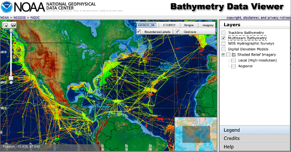
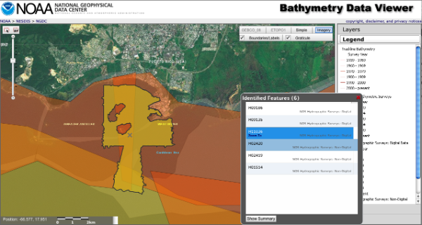
Trackback 2011-Jan-07: Friday Geonews: FacilMap.org, NOAA Bathymetry Viewer, ESRI's GeoDesign, Australia Flood Maps, GLONASS Phones, and more [slashgeo]
01.03.2011 15:29
Roland in the augmented reality (AR) experiement
Ever since I set foot in CCOM 5 years
ago, I've had thoughts about what cell phones, PDAs, or tablets
might do on ships. Roland and Andy M. have put together a platform
in the CCOM VisLab using
Linux and Flight Gear for
Colin and Roland to run experiments on to test performance using
hand held devices. This is very similar to the display setup at the
UofA Mars Phoenix Science Operation Center with a fabric strung up
on a frame and best effort (but not perfect) blending.
Photo credits: Colleen Mitchell
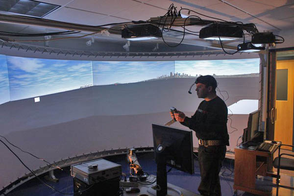
Photo credits: Colleen Mitchell
01.02.2011 22:44
L3 ATON using ANVDM, not AIVDM
In the category of unintended
consequences... Last month, we swapped a CNS 6000 Blue Force (BF)
Class A for an L3 Desktop ATON unit at Cape Cod. That all seemed
great except for the ATON reports AIS messages received as ANVDM
instead of AIVDM. That N as the second letter confuses some
software.
grep ANVDM uscg-nais-dl1-2011-01-03 | head !ANVDM,1,1,,A,403OvlAudAGssJrgbPH?TjA00805,0*4D,r003669947,1294012800 !ANVDM,1,1,,A,35MnbiPP@PJutf:H2Lv;Pa>000t1,0*09,r003669947,1294012800 !ANVDM,1,1,,A,15NC:LPP00JuBPHGsHsDkwv62<01,0*23,r003669947,1294012803 !ANVDM,1,1,,B,18153:h001rs6cFH>NdU54440400,0*61,r003669947,1294012803 !ANVDM,1,1,,B,35MnbiPP@PJutdlH2M1sIq:80000,0*10,r003669947,1294012804 !ANVDM,1,1,,A,152Hk2dP01Js8wdH>PR80wv<0@33,0*10,r003669947,1294012805 !ANVDM,1,1,,A,35MnbiPP@PJutd:H2M3sF94<011@,0*7A,r003669947,1294012807 !ANVDM,1,1,,A,152HiU@P00JrdjvH@CVEbgv>0H4?,0*55,r003669947,1294012807
01.02.2011 09:20
Hacking emacs - emacs lisp
During 2011, I would really like to
start writing org-spatial for emacs. I spend most of my life in
emacs and it is crazy that org-mode and emacs do not know about
location and projections. If that is going to change, I'm going to
have to step up and get it started. However, I suck at reading
lisp. What is a great source for getting going? ShowMeDo only has
one video tagged
with emacs.
I just found rpdillon on youtube. I just wish he had more videos.
I really have a hard time with most emacs lisp tutorials or manuals. I spend most of my time thinking about parsing and processing data from files. I think I need more tutorials like this where emacs is used to do stuff from the command line: Emacs Lisp as a scripting language. Dropping into the middle of the entire emacs world is a lot overwhelming.
I think the trouble with lisp is that I've spent too much time with ALGOL influenced programming languages (Pascal, C, C++, Java, Python) and the command line.
Comments and suggestions can go here: How to learn emacs lisp?
I just found rpdillon on youtube. I just wish he had more videos.
I really have a hard time with most emacs lisp tutorials or manuals. I spend most of my time thinking about parsing and processing data from files. I think I need more tutorials like this where emacs is used to do stuff from the command line: Emacs Lisp as a scripting language. Dropping into the middle of the entire emacs world is a lot overwhelming.
#!/usr/bin/emacs --script
(require 'calendar)
; Use current date if no date is given on the command line
(if (= 3 (length command-line-args-left))
(setq my-date (mapcar 'string-to-int command-line-args-left))
(setq my-date (calendar-current-date)))
; Make the conversions and print the results
(princ
(concat
"Gregorian: " (calendar-date-string my-date) "\n"
" ISO: " (calendar-iso-date-string my-date) "\n"
" Julian: " (calendar-julian-date-string my-date) "\n"
" Hebrew: " (calendar-hebrew-date-string my-date) "\n"
" Islamic: " (calendar-islamic-date-string my-date) "\n"
" Chinese: " (calendar-chinese-date-string my-date) "\n"
" Mayan: " (calendar-mayan-date-string my-date) "\n" ))
Which looks like this when run:
./cal.el
Gregorian: Sunday, January 2, 2011
ISO: Day 7 of week 52 of 2010
Julian: December 20, 2010
Hebrew: Teveth 26, 5771
Islamic: Muharram 26, 1432
Chinese: Cycle 78, year 27 (Geng-Yin), month 11 (Wu-Zi), day 28 (Ding-Si)
Mayan: Long count = 12.19.18.0.1; tzolkin = 13 Imix; haab = 14 Kankin
./cal.el 12 31 2010
Gregorian: Friday, December 31, 2010
ISO: Day 5 of week 52 of 2010
Julian: December 18, 2010
Hebrew: Teveth 24, 5771
Islamic: Muharram 24, 1432
Chinese: Cycle 78, year 27 (Geng-Yin), month 11 (Wu-Zi), day 26 (Yi-Mao)
Mayan: Long count = 12.19.17.17.19; tzolkin = 11 Cauac; haab = 12 Kankin
The first bummer that I notice is that the comment character for
lisp is the ";" character, so the shebang ("#!") is not going to
co-exist well with a loadable lisp file that can be used either as
a library or a script, which is a typical use in python.I think the trouble with lisp is that I've spent too much time with ALGOL influenced programming languages (Pascal, C, C++, Java, Python) and the command line.
Comments and suggestions can go here: How to learn emacs lisp?